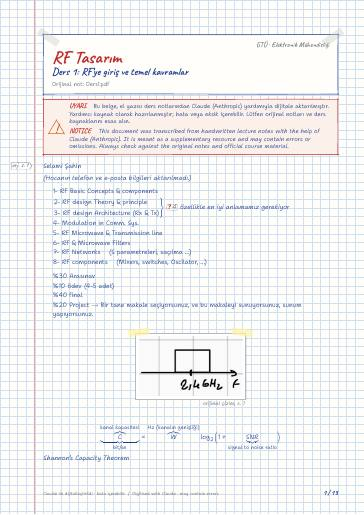

Haberleşme için RF Sistem Tasarımı · Dijital ders notu
Ders 1: RF'ye giriş ve temel kavramlar
- Ders
- Haberleşme için RF Sistem Tasarımı (ELM667)
- Dönem
- 7. Dönem · 2024–2025 Güz
- Biçim
- PDF · 13 sayfa · 0,5 MB · el yazısı görünümlü LaTeX
- Orijinal not
- Ders1.pdf

The digital notes were created from the handwritten notes with the help of Claude (Anthropic); they are meant as a supplementary resource and may contain errors. Always rely on the original notes and the official course materials.
Bu notta neler var?
- Noise
- White Noise
- Pink noise
- Antennas
- Patch Antenna
- RF Filters
- LNA
- Requirements
Notun metni
Düz metin olarak göster (formüller ve çizimler yoktur)
(Hocanın telefon ve e-posta bilgileri aktarılmadı.)
1- RF Basic Concepts & components
. özellikle en iyi anlamamız gerekiyor
4- Modulation in Comm. Sys.
5- RF Microwave & Transmission line
6- RF & Microwave Filters
7- RF Networks (S parametreleri, saçılma …)
8- RF components (Mixers, switches, Oscilator, …)
%20 Project → Bir tane makale seçiyorsunuz, ve bu makaleyi sunuyorsunuz, sunum yapıyorsunuz.
Shannon's Capacity Theorem
ITU kurumu nerde haberleşeceğini söyler
RF ısıma yapar, anten çalıştığı bölgeye göre tasarlanmış olacak.
Gürültüyü minimalize etmeliyiz
RF: 3 kHz frekansından 300 GHz'e kadar olan tüm sinyaller. (100 GHz üstü milimitre wave, 10 GHz üstü microwave)
frekans büyüdükçe anten küçülür.
White Noise Thermal Noise (Shot Noise) [ → White Noise N(m_0,σ) ]
Flicker Noise ( 1f^n noise) Pink noise
+ üst üste çizersek
2 kat arttırırsak 3 db
RF Front-End = RFE
Aynı anda hem verici hem alıcı çalışmaz
Log-periodic Antenna her iki alır
metal reflektör koyarsanız sadece tek yönlü olur
Aktif komponentler akımı yön veriyor.
N_A <<< seçilmeli Filtrenin kendisinden kaynaklanan ek gürültü
Low noise coming from device ( ⇒ low NF)
Linearity ( ⇒ high P_1dB → 1dB Compression Point
IP3 → Third order Intercept Point)
Low Power Consumption
Low Area '' (Small form factor)
Matching to anten filter